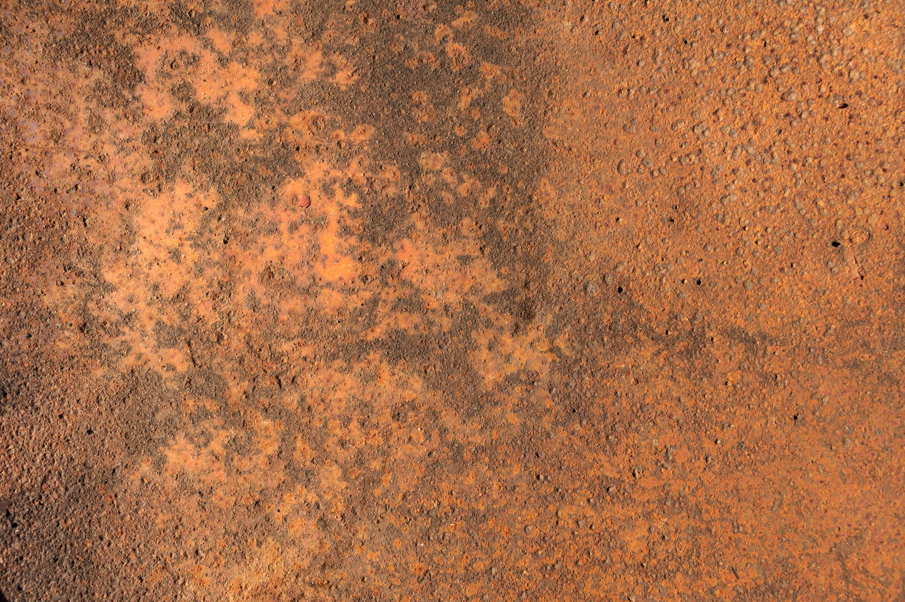

핵심광물 균형외교, NBR이 짚은 세 가지 구조 함정

NBR(미국 국가아시아연구소)은 2026년 8월 보고서에서 한국이 핵심광물 조달에서 중국 의존도를 낮추는 속도가 미국의 동맹국 요구 속도보다 18~24개월 뒤처져 있다고 분석했다. 한국의 갈륨 수입 중 중국산 비중은 2024년 기준 여전히 94%를 넘는다.
중국은 2023년 8월 갈륨·게르마늄 수출통제를 시행한 이후 2024년 12월 안티몬·초경합금 재료, 2025년 상반기 헬륨·희토류 자석 재료로 통제 품목을 단계적으로 확대했다. 현재 중국이 글로벌 생산의 60% 이상을 점유하며 수출통제를 시행 중이거나 검토 중인 광물은 12종에 달한다.
한국의 공급망 다변화 성과는 리튬·니켈 배터리 소재 분야에 편중돼 있다. 포스코홀딩스는 아르헨티나 리튬 광산(2030년 연 10만 톤 목표)과 호주 니켈 프로젝트에 진출했으나, 반도체용 갈륨·게르마늄·희토류 자석 소재의 비중국산 대체 공급원은 2026년 현재 상업적 규모에 도달한 곳이 사실상 없다.
KEI(미국 한국경제연구소)는 별도 분석에서 한국이 미국 IRA·CHIPS법 상의 '우려 대상 외국기업(FEOC)' 규정을 충족하기 위해 중국산 소재를 대체해야 하는 시한을 배터리 분야 2026년, 반도체 소재 분야 2027~2028년으로 추정했다. 이 시한을 놓치면 미국 시장 접근권에 직접 영향을 받는다.
NBR이 지적한 첫 번째 함정은 '다변화 착시'다. 한국 정부가 발표하는 공급망 다변화 협력 MOU 숫자는 늘었지만, 실제 상업 물량이 흐르는 계약으로 전환된 비율이 낮다. MOU 체결 후 실제 장기공급계약(LTA)으로 전환된 사례는 2025년 말까지 희토류 분야에서 3건에 불과하다.
두 번째 함정은 '시간 비대칭'이다. 중국의 수출통제는 정책 발표 후 수개월 내 즉각 발효되지만, 비중국산 공급원 개발은 광산 탐사→개발→정련→인증까지 최소 5~7년이 걸린다. 한국이 지금 광산 투자를 시작해도 2031년 이전에 갈륨·게르마늄 자급률 10%를 넘기기 어렵다는 계산이 나온다.
세 번째 함정은 '동맹 비용 가시화'다. 미국은 CHIPS법 보조금 수령 기업에 중국 반도체 시설 확장을 10년간 제한하는 가드레일을 부과했고, 삼성전자·SK하이닉스 모두 이 조건을 수용했다. 중국은 이에 대한 반응으로 한국 기업의 중국 내 소재 조달 조건을 압박할 수 있는 수단을 추가로 확보하고 있다. 균형외교의 비용이 '외교적 모호성'이 아닌 '소재 조달 리스크'로 직접 청구되기 시작한 구간이다.
호주·캐나다·카자흐스탄 등 비중국산 광물 보유국 광산 기업들이 한국 기업의 직접투자 대상으로 급부상하고 있다. 호주는 갈륨 원료인 보크사이트 매장량 세계 1위(약 53억 톤)를 보유하며, 정련 인프라 투자 유치를 적극 추진 중이다.
LS에코에너지·고려아연처럼 비철금속 제련 인프라를 보유하면서 희토류·전략광물 처리 능력을 병행 개발하는 기업은 수입 대체 수요와 정책 지원을 동시에 누릴 수 있는 위치에 있다. 고려아연의 2028년 갈륨 15.5t 양산 계획은 국내 수요(연간 약 30t 추정)의 50%를 처음으로 내재화하는 시도다.
미국·EU·일본의 핵심광물 공급망 재편 펀드가 비중국산 공급원을 확보한 한국 소재 기업에 공동투자 형태로 유입될 가능성도 높다. 미국 DFC(미국국제개발금융공사)는 2025년 이후 인도·태평양 핵심광물 프로젝트에 연간 20억 달러 이상을 배정하고 있다.
한국 반도체·디스플레이 업계는 갈륨·게르마늄·인듐 세 품목 모두에서 중국 의존도 90% 이상 구조를 단기에 탈피할 수 없다. 수출통제가 추가 강화될 경우 삼성전자·SK하이닉스의 GaN(질화갈륨) 기반 차세대 전력 소자 개발 일정과 LG디스플레이의 OLED 소재 조달 양쪽에 동시 충격이 온다.
비중국산 공급원 개발에 자본과 시간이 집중되는 동안 중소 소재 가공 기업들은 원가 상승분을 고객사에 전가하지 못하는 압박을 받는다. 갈륨 스팟 가격이 통제 전 대비 9배 수준을 유지하는 상황에서 장기계약으로 가격을 고정한 기업과 스팟 의존 기업 간의 수익성 격차가 벌어지고 있다.
기업 구매담당자라면 지금 당장 주요 소재별로 '비중국산 대체 가능 비중'을 SKU 단위로 산출해야 한다. 미국 FEOC 규정 적용 시한(배터리 2026년, 반도체 소재 2027~2028년)에 맞춰 조달 전환 로드맵을 역산해야 공급 단절 없이 전환이 가능하다.
투자자 관점에서는 '광물 다변화 MOU 발표'가 아닌 '장기공급계약(LTA) 체결 공시'를 진짜 신호로 봐야 한다. MOU에서 LTA로 전환되는 단계에서 주가 모멘텀이 실제로 형성된다. 계약 상대방의 국가·정련 능력·납기 조건을 함께 확인하는 것이 필수다.
실제 조달 현장에서는 — 비중국산 갈륨·게르마늄 오퍼가 들어와도 순도 인증서(CoA)의 신뢰도 검증이 병목이 되는 사례가 늘고 있다. 카자흐스탄·캐나다산 소재의 경우 ICP-MS 분석 결과와 공급업체 제출 CoA가 불일치하는 경우가 2024~2025년 사이 현장 거래의 약 30%에서 보고됐다. 신규 공급선을 뚫을 때 제3자 공인기관(한국화학융합시험연구원·SGS 등)의 교차 검증을 계약 조건에 명시하는 것이 실질적인 리스크 관리 출발점이다.
이 포스팅은 쿠팡 파트너스 활동의 일환으로 수수료를 제공받습니다.